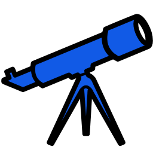

Pick a target, or enter coordinates and press Go
Spectrum
Brightness of the centre target at each wavelength. The first run per detector downloads from IRSA and takes a few minutes

Search. Pick a test target, or enter RA and Dec in decimal degrees, a field of view in arcseconds and one of the six detectors, or All. Adding ?ra=...&dec=... to the link opens a position directly.
All detectors. Choose All in the detector menu to load the frames from all six detectors together, in time order. Stack them to combine every detector into the deepest, least noisy image. Detectors 1 and 4, 2 and 5, and 3 and 6 take their pictures at the same moment, so stacking those pairs adds light without blurring moving objects. Colour information gets mixed, so use Spectrum to see it.
Playback. SPHEREx frames play in time order like a video. Use the frame slider, speed and pause. On test targets the arrow shows the expected direction of motion.
Frames. Tick frames in the list to use them with Blink, Difference and Stack. Click a row to jump to that frame.
Visits. Click the Frames button at the top of the list to switch the box to Visits. SPHEREx sweeps the whole sky and returns to each patch about every six months. A visit is one of those observing seasons. In this data a visit runs from under a day to about three months, six weeks on average, and holds between 30 and 200 frames. Every frame in a visit is averaged into one cleaner picture. The main image then plays through the visits, and Blink, Difference and Stack work on visits instead of frames. Subtracting one visit from another is the best way to spot something that moved, because about half a year of motion separates them. Click the button again to go back to Frames.
Blink. Flips quickly between the ticked frames, so anything that moves seems to jump while stars stay still.
Difference. Subtracts the earlier of two ticked frames from the later one. White is brighter later, black is brighter earlier, and unchanged sky turns grey.
Stack. Averages the ticked frames to cut noise and reveal faint sources. Moving objects smear out.
Spectrum. Measures how bright the centre target is at each wavelength, using raw SPHEREx data. Choose one detector or all six.
Report. Press Report or the space bar to save a note about the current frame for others to check.
Pick a target, or enter coordinates and press Go
Spectrum
Brightness of the centre target at each wavelength. The first run per detector downloads from IRSA and takes a few minutes
Frame date:
Username